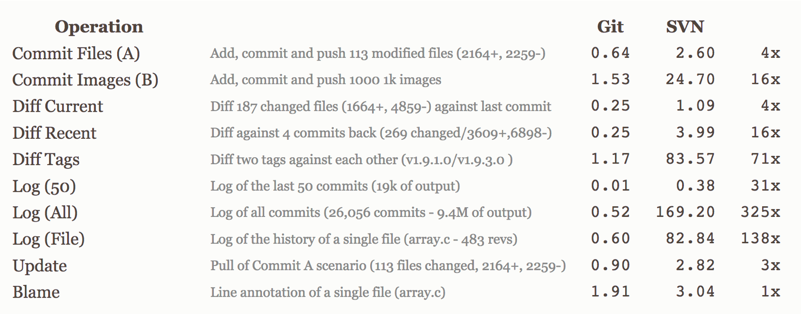
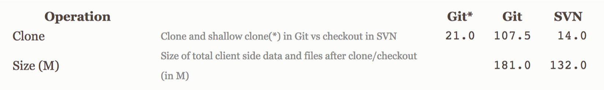

What is Git?
Git is an...
open-source,
distributed,
version control system
designed for speed and efficiency
that supports multiple workflow types
Version Control

Version control is a system that records changes to a file or set of files over time, so
that you can recall specific versions later
- Git-SCM
Think of version control as a time machine that
let's you look at history and go forwards and backwards though it!
Click the down arrow to understand when not to use version control!
When Not to Use Version Control
Any file that can be produced by executing version-controlled code should not be version-controlled itself, as you should be able to reproduce it.
Let the code work for you.
Open-Source
“Git is released under the GNU General Public License version 2.0, which is an open source license. The
Git project chose to use GPLv2 to guarantee your freedom to share and change free software---to make
sure the software is free for all its users.”
Git SCM - About

Distributed
Everything is fast
Every clone is a backup
You can work offine
Distributed
No network needed to...
- Perfom a diff
- View file history
- Commit changes
- Merge branches
- Obtain another revision of a file
- Switch branches
Supports Any Workflow Type
Subversion-Style Workflow
Supports Any Workflow Type
Integration Manager Workflow
Supports Any Workflow Type
Dictator & Lieutenants Workflow
Distributed
Git vs. SVN
Centralized
Git vs. Subversion

*This is the best-case scenario for SVN – a server with no load with an 80MB/s bandwidth connection to the client machine. In general, many Git operations are typically faster than the equivalent Subversion ones.
Git vs. Subversion
One Pitfall for Git: The Initial Clone

Why is this?
Git clones the entire history.
Subversion checks out the latest snapshot.
The initial clone is typically only performed once though (or at least infrequently).
There are other performance comparisons available between Git and Subversion. Some argue that Subversion has even improved beyond Git in more recent versions. If you're interested in researching this debate further, here are some recommended resources:
Summary of Benefits
| Git | Subversion |
|
|
What are Binary Files?
Binary files are non-text files that require a computer program to interpret how the stored data is formatted. Git relies on text to track changes, so binary files can be problematic.
Images
PDFs

Video
MS Office Products
CAD Drawings
Binary Files: Engineering Examples
- Interface Control Documents
- Software Design Documents
- Visio Drawings
- SolidWorks, AutoCAD, CATIA V5 drawings or animations
- Binary data used for input
- Catch-all: typically any file with a *.bin extension
Binary Files: Git's Solution
Git Large File Storage (LFS)
- Efficiently store large files
- Support file locking to prevent simultaneous changes of binary files
- Do NOT provide an easy way to view differences between versions of a binary file
Examples of installing and using Git LFS are explained in the installation module.
To use Git LFS, you will need a server that can handle this -- and not all servers do!
Click the down arrow for a recommended strategy when Git LFS is not available on your server.
Binary Files: Without Git LFS
Keeping track of binary files can still be a good idea.
The following is a recommended strategy.
- Create a separate repository to hold binary files
- Avoid branching, as merge conflicts are probable
This helps keep the size of your code-based repository small, which is especially useful when sharing (via cloning) with customers or peers.